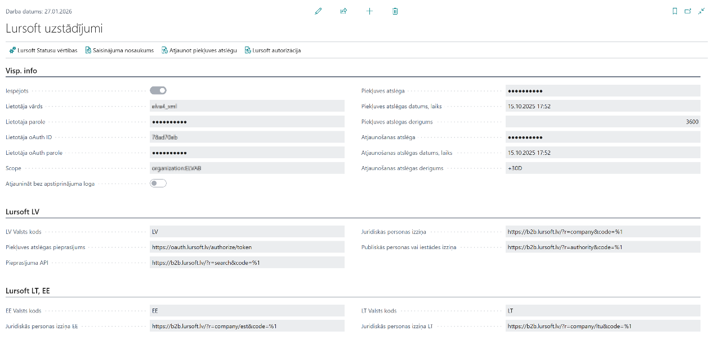
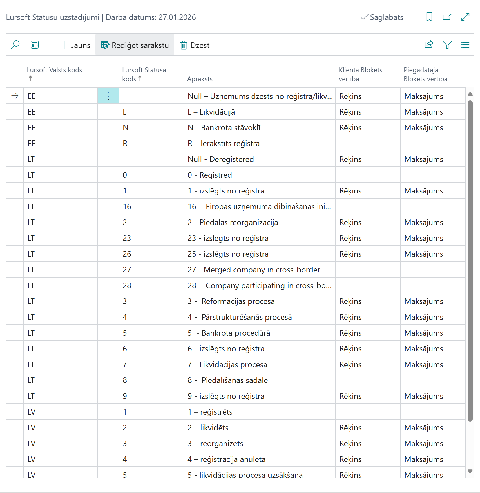
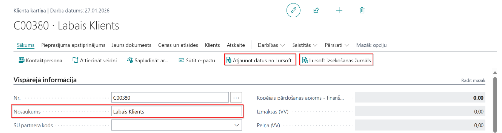
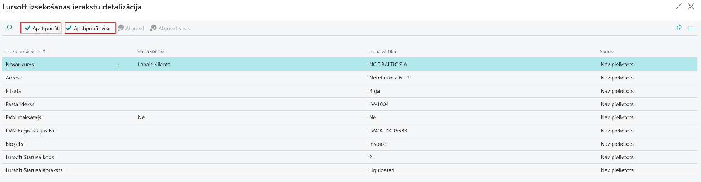
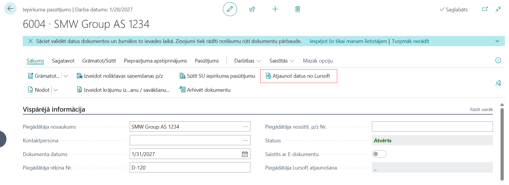
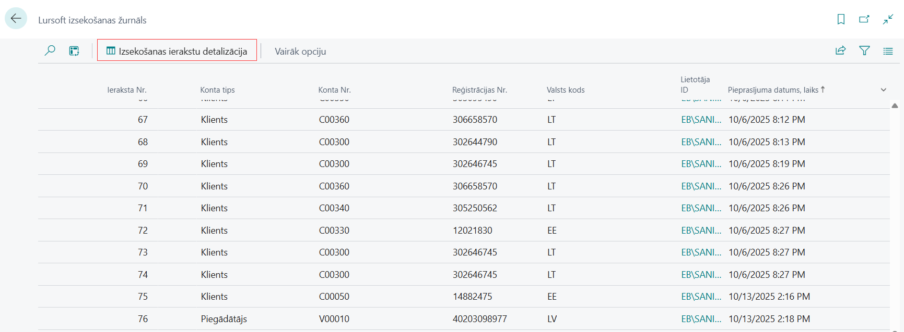
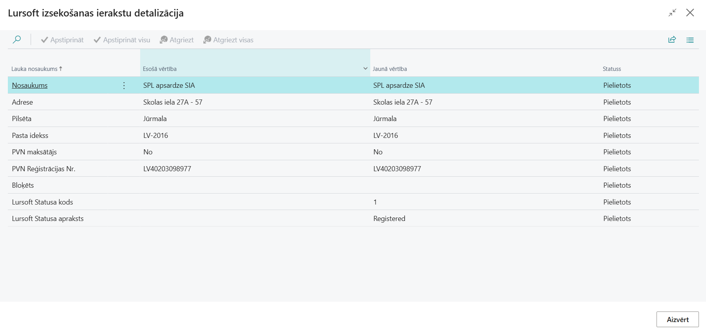

Darba uzsākšana
Piekļuves tiesības
Lai izmantotu Lursoft Integration, lietotājam nepieciešams piešķirt tiesību kopu ELV2-LURSOFT
Lursoft Integration uzstādījumi
- Nospiediet Meklēt ikonu lapas augšējā labajā stūrī, ievadiet Lursoft uzstādījumi un izvēlieties atbilstošo saiti
- Lursoft uzstādījumi lapā aizpildiet integrācijas pamatuzstādījumus cilnē Visp. info:
- Iespējots - ieslēdziet, ja sāksiet izmantot Lursoft Integration;
- Lietotāja vārds - norādiet lietotāja vārdu, kas saņemts no Lursoft;
- Lietotāja parole - norādiet lietotāja paroli, kas saņemta no Lursoft;
- Lietotāja oAuth ID - norādiet lietotāja oAuth ID, kas saņemts no Lursoft;
- Lietotāja oAuth parole - norādiet lietotāja oAuth ID paroli, kas saņemta no Lursoft;
- Scope - norādiet Scope vērtību, kas saņemta no Lursoft;
- Atjaunināt bez apstiprinājuma loga - ieslēdziet, ja vēlaties izmantot Lursoft datu atjaunināšanu bez lietotāja apstiprinājuma loga izmantošanas;
- Piekļuves atslēga - tiek piešķirta un aizpildīta sistēmā automātiski pēc Lursoft autentifikācijas izpildes;
- Piekļuves atslēgas datums, laiks - tiek piešķirta un aizpildīta sistēmā automātiski pēc Lursoft autentifikācijas izpildes;
- Piekļuves atslēgas derīgums - tiek piešķirta un aizpildīta sistēmā automātiski pēc Lursoft autentifikācijas izpildes;
- Atjaunošanas atslēga - tiek piešķirta un aizpildīta sistēmā automātiski pēc Lursoft autentifikācijas izpildes;
- Atjaunošanas atslēgas datums, laiks - tiek piešķirta un aizpildīta sistēmā automātiski pēc Lursoft autentifikācijas izpildes;
- Atjaunošanas atslēgas derīgums - norādiet vērtību +30D, kas ir definēta Lursoft dokumentācijā. Atjaunošanas atslēgas derīguma laiks ir 30 dienas vai 720 stundas;
Lursoft uzstādījumi lapā aizpildiet integrācijas uzstādījumus cilnē Lursoft LV:
- LV Valsts kods - norādiet vērtību LV no valstu saraksta, lai veiktu datu pieprasījumus no Lursoft Latvijas reģistra;
- Piekļuves atslēgas pieprasījums - norādiet autorizācijas atslēgas piekļuves iegūšanas saiti;
- Pieprasījuma API - norādiet datu pieprasījuma saiti partnera meklēšanai pēc Reģistrācijas numura;
- Juridiskās personas izziņa - norādiet datu pieprasījuma saiti partnera juridiskās izziņas iegūšanai;
- Publiskās personas vai iestādes izziņa - norādiet datu pieprasījuma saiti partnera kā Publiskās personas vai iestādes izziņas iegūšanai.
Lursoft uzstādījumi lapā aizpildiet integrācijas uzstādījumus cilnē Lursoft LT:
- LT Valsts kods - norādiet vērtību LT no valstu saraksta, lai veiktu datu pieprasījumus no Lursoft Lietuvas reģistra;
- Juridiskās personas izziņa LT - norādiet datu pieprasījuma saiti partnera juridiskās izziņas iegūšanai no LT reģistra.
Lursoft uzstādījumi lapā aizpildiet integrācijas uzstādījumus cilnē Lursoft EE:
- EE Valsts kods - norādiet vērtību EE no valstu saraksta, lai veiktu datu pieprasījumus no Lursoft Igaunijas reģistra;
- Juridiskās personas izziņa EE - norādiet datu pieprasījuma saiti partnera juridiskās izziņas iegūšanai no EE reģistra.

Visas uzstādījumos nepieciešamās pieprasījumu adreses par valstu (LV, LT un EE) datu reģistru pieprasījumiem ir atrodamas Lursoft dokumentācijā Lursoft.
Lursoft Statusu uzstādījumi
- Nospiediet Meklēt ikonu lapas augšējā labajā stūrī, ievadiet Lursoft statusu uzstādījumi un izvēlieties atbilstošo saiti.
- Lursoft statusu uzstādījumi lapā aizpildiet uzstādījumus tabulas veidā:
- Lursoft valsts kods - norādiet atbilstošo valsts koda vērtību (LV, LT vai EE), atbilstošās valsts datu pieprasījuma apstrādei;
- Lursoft Statusa kods - norādiet atbilstošo Lursoft statusa vērtību, atbilstošās valsts (LV, LT vai EE) datu pieprasījuma apstrādei;
- Apraksts - norādiet Lursoft statusa vērtības aprakstu vai skaidrojumu, lauks ir informatīvs, paskaidro statusa nozīmi;
- Klienta Bloķēts vērtība - norādiet vērtību laukam Statuss klienta kartiņā, kāda tiks piemērota klienta datu apstrādes rezultātā, pēc saņemta atbilstošā Lursoft statusa;
- Piegādātāja Bloķēts vērtība - norādiet vērtību laukam Statuss piegādātāja kartiņā, kāda tiks piemērota piegādātāja datu apstrādes rezultātā, pēc saņemta atbilstošā Lursoft statusa.

Lursoft Saīsinājumi
- Nospiediet Meklēt ikonu lapas augšējā labajā stūrī, ievadiet Lursoft saīsinājumi un izvēlieties atbilstošo saiti vai lapā Lursoft uzstādījumi izvēlāties darbību Lursoft saīsinājumi.
- Lursoft saīsinājumi tiek izmantoti pārāk garu partneru nosaukumu aizvietošanai, saīsināšanai ar vispārpieņemtiem saīsinājumiem;
- Lursoft saīsinājumi lapā aizpildiet uzstādījumus tabulas veidā:
- Saīsinājumi - norādiet atbilstošo saīsinājuma vērtību;
- Apraksts - norādiet atbilstošo pilnā teksta vērtību, kuras atrašanas gadījumā tiks pielietots atbilstošais saīsinājums.

Kā lietot
Lursoft klienta datu pieprasīšana
- Nospiediet Meklēt ikonu lapas augšējā labajā stūrī, ievadiet Klienti un izvēlieties atbilstošo saiti.
- Klientu sarakstā izvēlaties klientu, kuram nepieciešams veikt datu atjaunošanu no Lursoft un atveriet atbilstošā Klienta karti.

- Veiciet Lursoft datu pieprasīšanu, spiežot Atjaunot datus no Lursoft;
- Veiciet iepriekš pieprasīto datu pārskatīšanu, spiežot Lursoft izsekošanas žurnāls;

- Pārskatiet un apstipriniet no Lursoft saņemtos datus lapā Lursoft izsekošanas ierakstu detalizācija:
- Nosaukums - norāda klienta nosaukumu;
- Adrese - norāda klienta adreses informāciju;
- Pilsēta - norāda klienta pilsētu;
- Pasta indekss - norāda klienta pasta indeksu;
- PVN reģistrācijas numurs - norāda klienta PVN reģistrācijas numuru;
- Bloķēts - norāda klienta Statuss lauka vērtību Klientu kartē;
- Lursoft statusa kods - norāda saņemto statusa vērtību no Lursoft;
- Lursoft statusa apraksts - norāda saņemto statusa vērtības aprakstu no Lursoft.
- Pēc Lurosft pieprasījuma izpildes apstipriniet datus lapā Lursoft izsekošanas ierakstu detalizācija, kuri tālāk tiks aizstāti arī Klientu kartes atbilstošajos laukos;
- Pārskatiet Lursoft datus lapā Klientu karte cilnē Vispārējā informācija grupā Lurosft:
- Lursoft pēdējais aktualizēšanas datums un laiks - norāda, kad pēdējo reizi tika atjaunoti dati no Lurosft;
- Lursoft klienta statusa kods - apzīmē, kāds Lurosft sistēmā ir dotā klienta statuss;
- Lursoft klienta statusa apraksts - apzīmē, kāds Lurosft sistēmā ir dotā klienta statusa apraksts vai skaidrojums;
- Lursoft PVN Maksātājs - norāda vai klients ir PVN maksātājs;
- Lursoft izlaist klienta nosaukuma atjaunošanu - jāatzīmē vai vēlaties atjaunot un aizvietot klienta nosaukumu ar nosaukumu, kas saņemts no Lursoft datiem.

Lursoft klienta datu pieprasīšana no pārdošanas pasūtījuma
- Nospiediet Meklēt ikonu lapas augšējā labajā stūrī, ievadiet Pārdošanas pasūtījumi un izvēlieties atbilstošo saiti.
- Pārdošanas pasūtījumu sarakstā izvēlaties pasūtījumu, kuram nepieciešams veikt klienta datu pieprasīšanu no Lursoft un atveriet atbilstošo Pārdošanas pasūtījumu.
- Veiciet Lursoft datu pieprasīšanu, spiežot Atjaunot datus no Lursoft;

- Pārskatiet un apstipriniet no Lursoft saņemtos datus lapā Lursoft izsekošanas ierakstu detalizācija;
- Pēc Lurosft pieprasījuma izpildes apstiprinātie datus lapā Lursoft izsekošanas ierakstu detalizācija, kuri tiks aizstāti arī Klientu kartes atbilstošajos datu laukos;
- Pēc Lurosft pieprasījuma tiks atjaunots pieprasījuma datums un laiks arī lapā Pārdošanas pasūtījums laukā Klienta Lurosft atjaunošana:

- No lapas Pārdošanas pasūtījums Lursoft veiciet datu pieprasīšanu un atjaunošanu tikai vienu reizi dienā, jo vairāk tas nav atļauts.
Lursoft Piegādātāja datu pieprasīšana
- Nospiediet Meklēt ikonu lapas augšējā labajā stūrī, ievadiet Piegādātāji un izvēlieties atbilstošo saiti.
- Piegādātāju sarakstā izvēlaties piegādātāju, kuram nepieciešams veikt datu atjaunošanu no Lursoft un atveriet atbilstošā Piegādātāja karti.

- Veiciet Lursoft datu pieprasīšanu, spiežot Atjaunot datus no Lursoft;
- Veiciet iepriekš pieprasīto datu pārskatīšanu, spiežot Lursoft izsekošanas žurnāls;
- Pārskatiet un apstipriniet no Lursoft saņemtos datus lapā Lursoft izsekošanas ierakstu detalizācija:
- Nosaukums - norāda piegādātāja nosaukumu;
- Adrese - norāda piegādātāja adreses informāciju;
- Pilsēta - norāda piegādātāja pilsētu;
- Pasta indekss - norāda piegādātāja pasta indeksu;
- PVN reģistrācijas numurs - norāda piegādātāja PVN reģistrācijas numuru;
- Bloķēts - norāda piegādātāja Statuss lauka vērtību Piegādātāja kartē;
- Lursoft statusa kods - norāda saņemto statusa vērtību no Lursoft;
- Lursoft statusa apraksts - norāda saņemto statusa vērtības aprakstu no Lursoft.
Pēc Lurosft pieprasījuma izpildes apstipriniet datus lapā Lursoft izsekošanas ierakstu detalizācija, kuri tiks aizstāti arī Piegādātāja kartes atbilstošajos laukos;
Pārskatiet Lursoft datus lapā Piegādātāju karte cilnē Vispārējā informācija grupā Lurosft:
- Lursoft pēdējais aktualizēšanas datums un laiks - norāda, kad pēdējo reizi tika atjaunoti dati no Lurosft;
- Lursoft piegādātāja statusa kods - apzīmē, kāds Lurosft sistēmā ir dotā piegādātāja statuss;
- Lursoft piegādātāja statusa apraksts - apzīmē, kāds Lurosft sistēmā ir dotā piegādātāja statusa apraksts vai skaidrojums;
- Lursoft PVN Maksātājs - norāda vai piegādātājs ir PVN maksātājs;
- Lursoft izlaist piegādātāja nosaukuma atjaunošanu - jāatzīmē vai vēlaties atjaunot un aizvietot piegādātāja nosaukumu ar nosaukumu, kas saņemts no Lursoft datiem.
Lursoft piegādātāja datu pieprasīšana no iepirkuma pasūtījuma
- Nospiediet Meklēt ikonu lapas augšējā labajā stūrī, ievadiet Iepirkuma pasūtījumi un izvēlieties atbilstošo saiti.
- Iepirkuma pasūtījumu sarakstā izvēlaties pasūtījumu, kuram nepieciešams veikt piegādātāja datu pieprasīšanu no Lursoft un atveriet atbilstošo iepirkuma pasūtījumu.
- Veiciet Lursoft datu pieprasīšanu, spiežot Atjaunot datus no Lursoft;

- Pārskatiet un apstipriniet no Lursoft saņemtos datus lapā Lursoft izsekošanas ierakstu detalizācija;
- Pēc Lurosft pieprasījuma izpildes apstipriniet datus lapā Lursoft izsekošanas ierakstu detalizācija, kuri tiks aizstāti arī Piegādātāju kartes atbilstošajos datu laukos;
- Pēc Lurosft pieprasījuma izpildes, tiks atjaunoti dati arī lapā Iepirkumu pasūtījums laukā Piegādātāja Lurosft atjaunošana:

- No lapas Iepirkuma pasūtījums Lursoft datu pieprasīšanu un atjaunošanu veiciet tikai vienu reizi dienā, vairāk tas nav atļauts.
Lursoft izsekošanas žurnāls
- Nospiediet Meklēt ikonu lapas augšējā labajā stūrī, ievadiet Lursoft izsekošanas žurnāls un izvēlieties atbilstošo saiti.
- Lapā Lursoft izsekošanas žurnāls redzama visa Lursoft pieprasījumu veikšanas vēsture, kas attēlota sekojošās veidā:
- Ieraksta Nr. - norāda secīgu pieprasījuma iekšējo saraksta numerāciju;
- Konta tips - norāda par ko Lursoft datu pieprasījums tika veikts (Klients vai Piegādātājs);
- Konta Nr. - norāda konkrētā klienta vai piegādātāja uzskaites numuru sistēmā;
- Reģistrācijas Nr. - norāda konkrētā klienta vai piegādātāja Reģistrācijas Nr., ar kuru tika veikts Lursoft datu pieprasījums;
- Valts kods - norāda valsts kodu, kādas valsts reģistrā Lursoft pieprasījums tika veikts;
- Lietotāja ID - norāda lietotāja ID, kas veica Lurosft datu pieprasījumu;
- Pieprasījuma datums, laiks - norāda Lursoft pieprasījuma izpildes datumu un laiku.

- Lursoft izsekošanas žurnālā izvēlaties atbilstošo ierakstu no saraksta un veiciet detalizācijas pārskatīšanu, nospiežot pogu Izsekošanas ierakstu detalizācija:

- Lai dzēstu vēstures ierakstus Lursoft izsekošanas žurnālā izvēlaties atbilstošo ierakstu no saraksta un veiciet darbību Saistītās un Dzēst:
- Dzēst tekošo ierakstu - izpildiet, ja vēlaties dzēst konkrētu Lurosft pieprasījuma izsekošanas ierakstu;
- Dzēst visus ierakstus - izpildiet, ja vēlaties dzēst visus Lurosft pieprasījuma izsekošanas ierakstus;
- Dzēst ierakstus, kas vecāku par 30 dienām - izpildiet, ja vēlaties dzēst visus Lurosft pieprasījuma izsekošanas ierakstus, kas vecāki par 30 dienām;
- Dzēst ierakstus, kas vecāku par 90 dienām - izpildiet, ja vēlaties dzēst visus Lurosft pieprasījuma izsekošanas ierakstus, kas vecāki par 90 dienām.